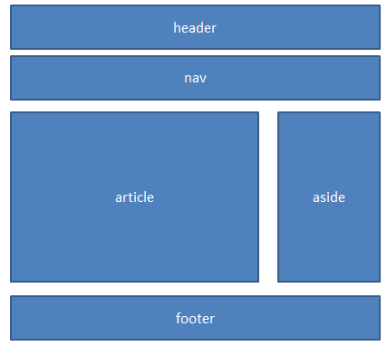
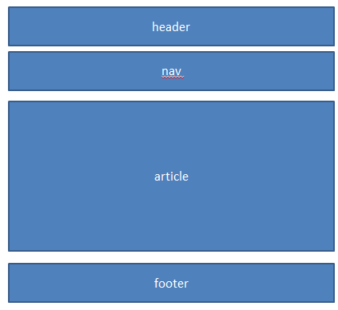
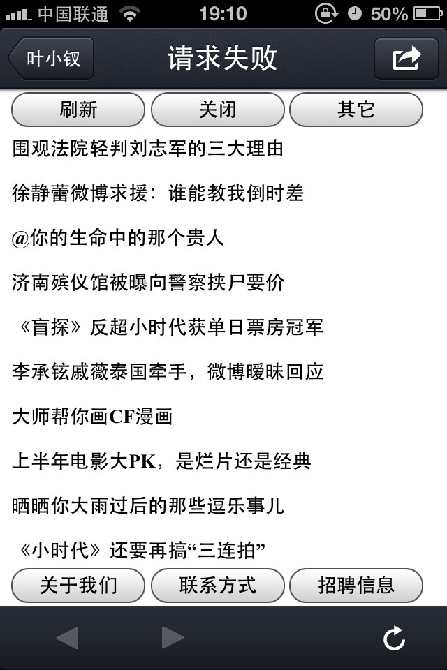

前言
上午时候我们简单了解了下用互联网的发展，本来想继续，却被打断了，所以我们现在继续学习吧。
移动设备的页面布局
我们前面一起学习了HTML5新增的很多语义化标签，不知各位还记得吗？这里我们可能需要一起来回顾一下啦。
header
header元素定义文档的页面组合，通常是一些引导和导航信息：
1 <header> 2 <h1>刀狂剑痴叶小钗</h1> 3 <p>一箫一剑平生意，负尽狂名十五年</p> 4 </header>
footer
footer元素定义文档或者章节结尾部分，通常包含一些章节的基本信息（作者、版权信息）：
1 <footer> 2 <p>私隐信息 | 版权所有</p> 3 <p>关于我们 | 联系在下</p> 4 </footer>
nav
nav元素定义为用来构建导航，显示导航链接：
1 <footer> 2 <nav> 3 <ul> 4 <li><a href="">私隐信息</a></li> 5 <li><a href="">版权所有</a></li> 6 <li><a href="">关于我们</a></li> 7 <li><a href="">联系在下</a></li> 8 </ul> 9 </nav> 10 </footer>
PS：我们需要在具有导航功能出使用nav，若是没有导航功能的话还是不要这么干了。
aside
aside元素定义一个页面区域，用来表示包含和页面相关的主要内容，其主要用作非正文内容，广告、侧边栏等。
article
article表示文档，页面用来显示一块独立的文章内容（一则网站新闻、一篇博客）：
1 <article> 2 <header> 3 <h1>刀狂剑痴叶小钗</h1> 4 </header> 5 <p>一箫一剑平生意，负尽狂名十五年</p> 6 <footer> 7 <ul> 8 <li>侠影仙踪01</li> 9 <li>侠影仙踪02</li> 10 </ul> 11 </footer> 12 </article>
使用article表示一篇叶小钗主题内容：
① header表示头部信息
② p表示主体介绍
③ footer包含与之相关信息
section
section与article容易混淆，用作定义文档中的节比如章节、页眉、页脚或者其它部分：
1 <article> 2 <section> 3 <h1>刀狂剑痴叶小钗</h1 4 <p>一箫一剑平生意，负尽狂名十五年</p> 5 </section> 6 <section> 7 <h1>清香白莲素还真</h1 8 <p>朱雀泣血吐丹志</p> 9 </section> 10 </article>
以上为我们的主要布局的元素，我们PC上的网页一般是这样的：

该布局在PC上毫无问题，那么我们的移动设备上会是怎么样的呢？
常见移动应用布局
我们的PC与移动端的设备还是有很大区别的：
① 配置问题，毫无疑问手机的配置赶不上电脑，我们还不能太嚣张
② 屏幕大小，屏幕放大缩小的方式小的已经不能接受了，我有时用手机登陆博客园就经常点错。。。
在手机上我们的表现一般是这个样子的：
① header 一些操作按钮、标题
② article 正文区域
③ footer页脚导航

关于这块的页面各位先不要着急，我们后面会做一个滴：）
PS：iphone在原生按钮等美观上做的非常出色，我们这里就来做一个看看：
简单的移动布局
我这里在腾讯微博抓取了最热的一点微博的数据，这里我们进行一点点处理后，用于组成我们的页面吧：）
1 <!DOCTYPE html> 2 <html xmlns="http://www.w3.org/1999/xhtml"> 3 <head> 4 <title></title> 5 <meta name="viewport" content="initial-scale2.0,width=device-width" /> 6 <style type="text/css"> 7 * { font-size: 12px; } 8 header { position: fixed; top: 0; width: 100%; background-color: White; } 9 footer { position: fixed; bottom: 0; width: 100%; background-color: White; } 10 input { width: 30%; font-weight: bold; font-size: 14px; } 11 section { margin: 25px 0; } 12 </style> 13 </head> 14 <body> 15 <header> 16 <input type="button" value="刷新" /> 17 <input type="button" value="关闭" /> 18 <input type="button" value="其它" /> 19 </header> 20 <section> 21 <article><h1>四川大桥被冲毁，有多辆车坠河</h1></article> 22 <article><h1>江山中学同学悼念@王琳佳@叶梦圆</h1></article> 23 <article><h1>李宇春确定担任快男总决赛评委</h1></article> 24 <article><h1>围观法院轻判刘志军的三大理由</h1></article> 25 <article><h1>徐静蕾微博求援：谁能教我倒时差</h1></article> 26 <article><h1>@你的生命中的那个贵人</h1></article> 27 <article><h1>济南殡仪馆被曝向警察挟尸要价</h1></article> 28 <article><h1>《盲探》反超小时代获单日票房冠军</h1></article> 29 <article><h1>李承铉戚薇泰国牵手，微博暧昧回应</h1></article> 30 <article><h1>大师帮你画CF漫画</h1></article> 31 <article><h1>上半年电影大PK，是烂片还是经典</h1></article> 32 <article><h1>晒晒你大雨过后的那些逗乐事儿</h1></article> 33 <article><h1>《小时代》还要再搞“三连拍”</h1></article> 34 <article><h1>3男子想吃到正宗羊肉串 偷羊50多只</h1></article> 35 <article><h1>二十七八岁时你在做什么</h1></article> 36 <article><h1>冯小刚确定担任春晚总导演</h1></article> 37 <article><h1>航班延误频发，乘客打人袭警不淡定</h1></article> 38 <article><h1>网友直播上海双层观光巴士着火</h1></article> 39 <article><h1>飞越疯人院演中国版，@好友做测试</h1></article> 40 <article><h1>穆雷完胜小德温网夺冠</h1></article> 41 </section> 42 <footer> 43 <input type="button" value="关于我们" /> 44 <input type="button" value="联系方式" /> 45 <input type="button" value="招聘信息" /> 46 </footer> 47 </body> 48 </html>
各位将就着看看吧：
http://sandbox.runjs.cn/show/nxenhsy2

丑是丑点，什么都有了嘛。
结语
今天初步入门嘛，我们可能一起打了一点点酱油哈。。。
我们接下来就一起学习jquery mobile啦！！！